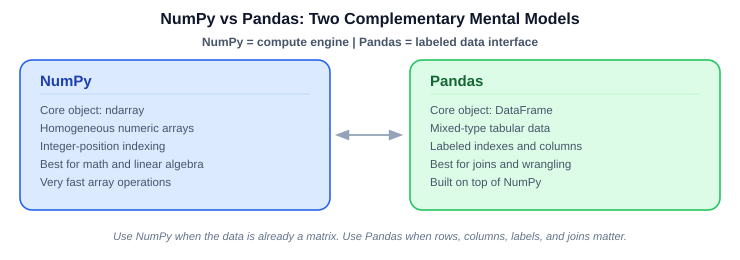

Python is the lingua franca of data science and ML. This chapter covers the language mechanics, libraries, and coding patterns you use daily — from variable binding and data structures through Pandas, NumPy, visualization, scikit-learn pipelines, and code quality practices.
What you will learn:
| Section | Topic |
|---|---|
| 3.1 | Python essentials: references, mutability, error handling |
| 3.2 | Python patterns every DS uses daily |
| 3.3 | Functions, decorators, and context managers |
| 3.4 | Object-oriented Python for ML |
| 3.5 | Data wrangling with Pandas |
| 3.6 | Matplotlib and Seaborn: visualization |
| 3.7 | Scikit-learn patterns |
| 3.8 | File I/O, string processing, and regex |
| 3.9 | Testing and code quality for data science |
Prerequisites: Basic programming experience. No prior Python assumed but helpful.
Two fundamentals:
Key: Python variables are names bound to objects; rebinding a name ≠ mutating an object.
Mental model:
# Immutable example: rebinding
x = 1
y = x
x = 2
print(x) # 2
print(y) # 1
# Mutable example: shared-object mutation
a = {"value": 1}
b = a
b["value"] = 2
print(a) # {'value': 2}
print(b) # {'value': 2}next reference.| Operation | Python list | Singly linked list |
|---|---|---|
| Access by index | typically \(O(1)\) | \(O(n)\) |
| Search by value | typically \(O(n)\) | \(O(n)\) |
| Append | typically \(O(1)\) amortized | \(O(n)\) from head if no tail |
| Insert/delete at front | typically \(O(n)\) | \(O(1)\) |
| Insert/delete in middle | typically \(O(n)\) (shift) | relink \(O(1)\) if node/prev known; else traversal makes total \(O(n)\) |
Key: Linked lists are only cheap to update when you already hold the needed node/reference.
from dataclasses import dataclass
@dataclass
class Node:
value: int
next: "Node | None" = None
third = Node(3)
second = Node(7, third) # 'next' stores a reference to another Node object
head = Node(11, second) # 11 -> 7 -> 3Usually prefer: - built-in list -
collections.deque
Linked lists matter mainly for DS intuition / interviews.
arr[2].# Shared reference with a mutable object
a = {"value": 11}
b = a
b["value"] = 22
print(a) # {'value': 22}
print(b) # {'value': 22}
# Rebinding with an immutable object
x = 11
y = x
y = 22
print(x) # 11
print(y) # 22# Tiny linked-list node example
node1 = {"value": 11, "next": None}
node2 = {"value": 7, "next": None}
node1["next"] = node2
print(node1["value"]) # 11
print(node1["next"]["value"]) # 7Big O:
\[O(f(n))\]
Describes growth as input size \(n\) increases.
| Structure | Fast operations | Slow operations |
|---|---|---|
| Python list | index access, append | front insert/delete, middle shifts |
| Linked list | front insert/delete, relinking with node access | indexing, traversal search, append from head |
Key: Use lists for fast random access; linked lists help when updates happen at a node you already have.
a = b and b is a dict, then
a['x'] = 10 mutates the shared object.num1 = 11
num2 = num1Then:
num2 = 22num2 is rebound; original 11 is
unchanged.
dict1 = {"value": 11}
dict2 = dict1dict2["value"] = 22Both names see the mutation:
dict1 # {'value': 22}
dict2 # {'value': 22}arr = [11, 7, 3, 23]
arr[2] # 3head = {
"value": 11,
"next": {
"value": 7,
"next": {
"value": 3,
"next": {
"value": 23,
"next": None
}
}
}
}To reach 23, follow next step by step.
Same data, different structure, different cost.
Python errors fall into 3 groups:
| Type | When | Example |
|---|---|---|
| Syntax error | before execution | print("hello" |
| Runtime exception | during execution | 10 / 0 |
| Logic bug | code runs, wrong result | + instead of * |
Runtime exceptions use try, except,
finally.
try: risky codeexcept: matching handlerfinally: cleanup either wayKey: Catch specific exceptions first; use broad
Exceptiononly as fallback.
ZeroDivisionError: divide by
zero.ValueError: right type, wrong value
content.Exception: broad base for many runtime
errors.try:
value = int(input("Enter an integer: "))
print("Parsed integer:", value)
except ValueError:
print("Input error: please type digits like 42, not text like 'hello'.")
except Exception as e: # fallback handling for unexpected cases
print("Unexpected runtime problem while processing input:", e)
finally:
print("Input step finished; cleanup/reporting runs no matter what.")Ordering rule: - specific except first - broad
except Exception last
try-except-finally with divisiona = 5
b = 2
try:
print("resource Open")
print(a / b)
except Exception as e:
print("Hey, You cannot divide a Number by Zero", e)
finally:
print("resource Closed")b = 2: division succeeds; finally still
runs.b = 0: ZeroDivisionError is caught;
finally still runs.a = 5
b = 2
try:
print("resource Open")
print(a / b)
k = int(input("Enter a number"))
print(k)
except ZeroDivisionError as e:
print("Hey, You cannot divide a Number by Zero", e)
except ValueError as e:
print("Invalid Input")
except Exception as e:
print("Something went Wrong.")
finally:
print("resource Closed")| Risky line | Possible exception | Handler |
|---|---|---|
a / b |
ZeroDivisionError |
first except |
int(input(.)) |
ValueError |
second except |
| unexpected issue | other runtime exception | Exception fallback |
Key: Separate handlers make failures clearer and debugging easier.
try for risky code, except for
handling, finally for cleanup.ZeroDivisionError and ValueError are
specific runtime exceptions.except blocks over only a generic
Exception.Exception and hiding the real cause.int(input(.)) can raise
ValueError.finally.| Tool | Best for | Core object |
|---|---|---|
NumPy |
fast numerical array ops | ndarray |
Pandas |
labeled tabular data | DataFrame |

Key:
NumPy= compute on arrays;Pandas= organize/query labeled tables.
axis: dimension being
reduced/aggregated..loc[.].a + b on arrays is element-wise.axis=0 → one result per columnaxis=1 → one result per rowdf.set_index(col) makes that column the row label.| Axis | Operation | Result |
|---|---|---|
| axis=0 | collapse rows ↓ | per-column result |
| axis=1 | collapse columns → | per-row result |
Element-wise array addition
\[ \mathbf{c} = \mathbf{a} + \mathbf{b}, \quad c_i = a_i + b_i \]
Axis-wise sum
\[ s_j = \sum_i x_{ij} \]
Axis-wise maximum
\[ m_i = \max_j x_{ij} \]
| Goal | Function | Example |
|---|---|---|
| all zeros | np.zeros() |
np.zeros((2,3)) |
| all ones | np.ones() |
np.ones((4,2,2), dtype='int32') |
| constant fill | np.full() |
np.full((2,2), 99) |
| numeric range | np.arange() |
np.arange(1,15,2) |
| random integers | np.random.randint() |
np.random.randint(-4,8, size=(3,3)) |
import numpy as np
np.zeros((2,3))
np.ones((4,2,2), dtype='int32')
np.full((2,2), 99)
np.arange(1,15,2)
np.random.randint(-4,8, size=(3,3))a = np.array([1,2,3,4])
a + 1
b = np.array([1,0,1,0])
a + bx = np.array([[1,2,3],
[4,5,6]])
x.sum(axis=0) # array([5, 7, 9])
x.sum(axis=1) # array([ 6, 15])Key: Ask: “one result per what?” Column →
axis=0; row →axis=1.
c = np.identity(3)
np.linalg.det(c) # 1.0\[ \det(I_n) = 1 \]
axisstats = np.array([[1,2,3],
[4,5,6]])
np.min(stats) # 1
np.max(stats, axis=1) # array([3, 6])
np.sum(stats, axis=0) # array([5, 7, 9])\[ \begin{bmatrix} 1 & 2 & 3 \\ 4 & 5 & 6 \end{bmatrix} \]
import pandas as pd
df = pd.DataFrame({
'name': ['Asha', 'Ben', 'Cara'],
'score': [88, 92, 85],
'city': ['NYC', 'LA', 'Chicago']
})
df = df.set_index("name")
df.loc["Ben"]Key:
set_index()converts a column into row labels for label-based lookup.
NumPy arrays: efficient homogeneous numeric
containers.axis=0 → per column, axis=1 → per
row.np.identity() + np.linalg.det() are basic
linear algebra utilities.df.set_index(.) enables label-based row access.| Pitfall | Fix |
|---|---|
Confusing axis=0 vs axis=1 |
think “result per column” vs “result per row” |
| Assuming NumPy math is scalar-style | remember matching shapes → element-wise |
| Forgetting random outputs vary | set seed if reproducibility matters |
Ignoring dtype |
check numeric type explicitly |
| Forgetting index mutation behavior | know whether reassignment / inplace=True is used |
| Notation | Name | Plain English | Example |
|---|---|---|---|
| \(O(f(n))\) | Big O — upper bound | Growth is at most this fast. “It will never be worse than…” | Merge sort is \(O(n \log n)\) — even in the worst case, it never exceeds \(n \log n\) operations. |
| \(\Theta(f(n))\) | Big Theta — tight bound | Growth is exactly this rate (bounded above and below). “It always grows like…” | Merge sort is \(\Theta(n \log n)\) — it does roughly \(n \log n\) work in every case. |
| \(\Omega(f(n))\) | Big Omega — lower bound | Growth is at least this fast. “You can’t do better than…” | Comparison-based sorting is \(\Omega(n \log n)\) — no comparison sort can beat this. |
Quick mnemonic: \(O\) = ceiling (upper), \(\Omega\) = floor (lower), \(\Theta\) = exact fit (both). In interviews, \(O\) is used 95% of the time.
These describe which inputs you’re analyzing — they are separate from \(O/\Theta/\Omega\), which describe how you bound the growth.
| Case | Meaning | Linear search example (find x in list of n) |
|---|---|---|
| Best case | Luckiest possible input | \(O(1)\) — x is the first element |
| Average case | Expected over random inputs | \(O(n/2) = O(n)\) — on average, scan half the list |
| Worst case | Unluckiest possible input | \(O(n)\) — x is last or not present |
So: “worst-case time is \(O(n^2)\)” = case analysis (worst) + asymptotic bound (\(O\)). Two independent choices.
Key: Big O is not “worst case” by definition — that’s just common usage. You can absolutely say “the best-case time is \(O(1)\)” or “the average-case time is \(O(n \log n)\).”
| Case | Complexity | When it happens |
|---|---|---|
| Best | \(O(n \log n)\) | Pivot always lands near the median |
| Average | \(O(n \log n)\) | Random pivots — expected over random inputs |
| Worst | \(O(n^2)\) | Pivot is always the smallest/largest element (e.g., already sorted input with naïve pivot) |
| Pattern | Operation | Example |
|---|---|---|
| Sequential parts | T1 + T2 → add | same n → O(n+n)=O(n), diff inputs → O(a+b) |
| Nested parts | T1 × T2 → multiply | O(a×b) or O(n²) |
| Independent inputs | keep separate | O(a) and O(b), not O(a+b) |
Only simplify terms when they use the same variable.
Key: Separate inputs stay separate.
def process(a, b):
for i in range(a):
print(i)
for j in range(b):
print(j)\[ O(a + b) \]
def process_pairs(a, b):
for i in range(a):
for j in range(b):
print(i, j)\[ O(a * b) \]
\[ O(n + n) = O(2n) = O(n) \]
| Growth | Name | Example | n=1000 ops |
|---|---|---|---|
| \(O(1)\) | constant | dict lookup, array index | 1 |
| \(O(\log n)\) | logarithmic | binary search | ~10 |
| \(O(n)\) | linear | single scan | 1,000 |
| \(O(n \log n)\) | linearithmic | merge sort | ~10,000 |
| \(O(n^2)\) | quadratic | nested loops / bubble sort | 1,000,000 |
| \(O(2^n)\) | exponential | brute-force subsets | astronomical |
| \(O(n!)\) | factorial | all permutations | impossible |
Key: Anything above \(O(n \log n)\) becomes impractical fast. Prefer hash maps over nested loops.
def contains_common_value(xs, ys):
seen = set(xs)
for y in ys:
if y in seen:
return True
return Falseseen: \(O(a)\)
for xsys: \(O(b)\)y in seen: typical average-case \(O(1)\)Overall:
\[ O(a + b) \]
| Operation / structure | Typical cost |
|---|---|
| array/list indexing | \(O(1)\) |
| linked-list search | \(O(n)\) |
| hash-table / set lookup | often average-case \(O(1)\) |
| balanced-tree operations | often \(O(\log n)\) |
Key: Data structure choice often matters more than loop cleverness.
Classic answer:
n → add → \(O(n)\)n → multiply → \(O(n^2)\)| Pattern | Result |
|---|---|
| loop n + loop n (same variable) | O(n) — linear |
| loop a + loop b (different variables) | O(a + b) — keep both |
| loop n × loop n (nested) | O(n²) — quadratic |
The most Pythonic way to build sequences. Faster than loops and more readable once you know them.
# List comprehension — builds a list
squares = [x**2 for x in range(10)]
evens = [x for x in range(20) if x % 2 == 0]
flat = [item for sublist in nested for item in sublist]
# Dict comprehension
word_len = {word: len(word) for word in ['cat', 'elephant', 'ox']}
# Set comprehension
unique_lengths = {len(word) for word in ['cat', 'elephant', 'ox']}
# Generator — lazy, memory-efficient (no brackets, no list built in memory)
gen = (x**2 for x in range(10_000_000)) # instant, no memory cost
total = sum(gen) # compute on demand# Lambda — anonymous function for simple one-liners
square = lambda x: x**2
add = lambda x, y: x + y
# map — apply function to every element
squared = list(map(lambda x: x**2, [1, 2, 3, 4]))
# same as: [x**2 for x in [1,2,3,4]] ← usually prefer comprehension
# filter — keep elements where function returns True
evens = list(filter(lambda x: x % 2 == 0, range(10)))
# sorted with key
people = [('Alice', 30), ('Bob', 25), ('Charlie', 35)]
by_age = sorted(people, key=lambda p: p[1])# zip — pair up iterables
names = ['Alice', 'Bob', 'Carol']
scores = [92, 85, 91]
paired = list(zip(names, scores)) # [('Alice', 92), .]
# enumerate — index + value
for i, name in enumerate(names, start=1):
print(f"{i}. {name}")
# any / all
all_passing = all(s >= 50 for s in scores) # True
any_failing = any(s < 50 for s in scores) # False
# Counter — fast frequency counting
from collections import Counter
word_counts = Counter("the quick brown fox the fox".split())
# Counter({'the': 2, 'fox': 2, 'quick': 1, 'brown': 1})
top_2 = word_counts.most_common(2)
# defaultdict — no KeyError on missing key
from collections import defaultdict
graph = defaultdict(list)
graph['A'].append('B') # no need to initialize graph['A'] = [] first# Type hints — document what your function expects
from typing import List, Dict, Optional, Tuple, Union
def train_model(
X: 'np.ndarray',
y: 'np.ndarray',
learning_rate: float = 0.01,
epochs: int = 100,
verbose: bool = False,
) -> Dict[str, float]:
"""
Train a simple model.
Args:
X: Feature matrix (n_samples, n_features)
y: Target vector (n_samples,)
learning_rate: Step size for gradient descent
epochs: Number of training iterations
verbose: Print progress if True
Returns:
Dict with 'train_loss' and 'val_loss' keys
"""
# . training logic .
return {'train_loss': 0.12, 'val_loss': 0.15}A decorator wraps a function to add behavior without modifying its code. Common in production ML: logging, timing, caching.
import time
import functools
def timer(func):
"""Decorator: print how long a function takes."""
@functools.wraps(func) # preserves function name/docstring
def wrapper(*args, **kwargs):
start = time.time()
result = func(*args, **kwargs)
elapsed = time.time() - start
print(f"{func.__name__} took {elapsed:.3f}s")
return result
return wrapper
@timer
def load_data(path):
import pandas as pd
return pd.read_csv(path)
# Equivalent to: load_data = timer(load_data)
# Built-in useful decorator: cache expensive function calls
from functools import lru_cache
@lru_cache(maxsize=128)
def compute_features(user_id: int) -> tuple:
# Expensive DB call — result is cached after first call
return fetch_user_features(user_id)The with statement ensures resources are properly
cleaned up.
# File I/O — file always closed even if exception occurs
with open('data.csv', 'r') as f:
data = f.read()
# Multiple resources
with open('input.txt') as fin, open('output.txt', 'w') as fout:
fout.write(fin.read().upper())
# Custom context manager with contextlib
from contextlib import contextmanager
@contextmanager
def timer_context(label=''):
start = time.time()
yield # code in the with block runs here
print(f"{label}: {time.time()-start:.3f}s")
with timer_context("model training"):
model.fit(X_train, y_train)Classes organize code that has state. In ML you’ll see them everywhere — sklearn models, PyTorch layers, data loaders.
from dataclasses import dataclass, field
from typing import Optional
import numpy as np
@dataclass
class ModelConfig:
"""Configuration for an ML model. Dataclass handles __init__ automatically."""
learning_rate: float = 0.01
n_epochs: int = 100
hidden_dims: list = field(default_factory=lambda: [128, 64])
dropout: float = 0.2
seed: Optional[int] = None
class LinearClassifier:
"""A simple linear classifier implementing sklearn-style API."""
def __init__(self, config: ModelConfig):
self.config = config
self.weights = None
self.bias = None
self.is_fitted = False
def fit(self, X: np.ndarray, y: np.ndarray) -> 'LinearClassifier':
"""Train the model. Returns self for method chaining."""
n_features = X.shape[1]
self.weights = np.zeros(n_features)
self.bias = 0.0
# . training loop .
self.is_fitted = True
return self # enables: model.fit(X, y).predict(X_test)
def predict(self, X: np.ndarray) -> np.ndarray:
if not self.is_fitted:
raise RuntimeError("Call fit() before predict()")
return (X @ self.weights + self.bias > 0).astype(int)
def __repr__(self) -> str:
return f"LinearClassifier(lr={self.config.learning_rate}, fitted={self.is_fitted})"
# Usage
config = ModelConfig(learning_rate=0.001, n_epochs=200)
model = LinearClassifier(config)
model.fit(X_train, y_train)
preds = model.predict(X_test)from sklearn.base import BaseEstimator, TransformerMixin
class LogTransformer(BaseEstimator, TransformerMixin):
"""Custom sklearn transformer: log(1+x)."""
def fit(self, X, y=None):
return self # nothing to learn
def transform(self, X, y=None):
return np.log1p(X)
# Now works in sklearn Pipeline!
from sklearn.pipeline import Pipeline
from sklearn.linear_model import LogisticRegression
pipe = Pipeline([
('log', LogTransformer()),
('model', LogisticRegression()),
])
pipe.fit(X_train, y_train)import pandas as pd
import numpy as np
df = pd.read_csv('data.csv')
# ── INSPECT ─────────────────────────────────────────────────
df.shape # (rows, cols)
df.dtypes # column types
df.info() # types + nulls at once
df.describe() # mean, std, quartiles
df.head(5) # first 5 rows
df.value_counts() # frequency of each value
df.nunique() # unique values per column
# ── FILTER ──────────────────────────────────────────────────
df[df['age'] > 30] # single condition
df[(df['age'] > 30) & (df['city'] == 'NY')] # multiple: use & not 'and'
df.query("age > 30 and city == 'NY'") # cleaner syntax for complex filters
df[df['col'].isin(['a', 'b', 'c'])] # membership test
df[df['col'].notna()] # drop NaN rows
# ── SELECT AND RESHAPE ──────────────────────────────────────
df[['col1', 'col2']] # select columns
df.drop(columns=['col_to_remove']) # drop column
df.rename(columns={'old': 'new'}) # rename
df.sort_values('col', ascending=False) # sort
df.drop_duplicates(subset=['user_id']) # dedup
# ── GROUPBY ─────────────────────────────────────────────────
df.groupby('category')['revenue'].sum() # sum per group
df.groupby('city').agg({'revenue': 'mean', 'orders': 'count'})
df.groupby(['city', 'month'])['revenue'].sum().reset_index()
# ── JOINS ───────────────────────────────────────────────────
pd.merge(df_left, df_right, on='user_id', how='left') # SQL-style join
pd.concat([df1, df2], ignore_index=True) # stack rows
# ── MISSING VALUES ──────────────────────────────────────────
df.isna().sum() # count nulls per column
df.isna().mean() * 100 # % null per column
df['col'].fillna(df['col'].median()) # fill with median
df.dropna(subset=['required_col']) # drop rows where this col is null
# ── APPLY and TRANSFORM ───────────────────────────────────────
df['new'] = df['text'].apply(lambda x: len(x.split())) # apply function
df['norm'] = (df['val'] - df['val'].mean()) / df['val'].std() # standardize
# ── WINDOW FUNCTIONS ────────────────────────────────────────
df['rolling_mean'] = df['sales'].rolling(7).mean() # 7-day moving avg
df['cumulative'] = df['sales'].cumsum() # running total
df['rank'] = df['revenue'].rank(ascending=False, method='dense')
# ── STRING OPS ──────────────────────────────────────────────
df['email'].str.lower() # lowercase
df['name'].str.contains('Smith') # regex search
df['text'].str.split(' ').str[0] # split and get first word
df['col'].str.extract(r'(\d{4})') # extract with regex# Messy style (many reassignments)
df = df.dropna(subset=['revenue'])
df = df[df['revenue'] > 0]
df = df.rename(columns={'revenue': 'sales'})
df = df.sort_values('sales', ascending=False)
# Clean chained style
result = (
df
.dropna(subset=['revenue'])
.query('revenue > 0')
.rename(columns={'revenue': 'sales'})
.sort_values('sales', ascending=False)
.reset_index(drop=True)
)Good visualizations are not optional in DS — they’re how you communicate findings and how you debug models.
import matplotlib.pyplot as plt
import seaborn as sns
# Set a clean style once at the top of your notebook
sns.set_theme(style='whitegrid', palette='colorblind')
plt.rcParams['figure.dpi'] = 120
# ── DISTRIBUTION ────────────────────────────────────────────
fig, axes = plt.subplots(1, 2, figsize=(12, 4))
# Histogram + KDE
axes[0].hist(df['age'], bins=30, edgecolor='white', alpha=0.7)
axes[0].set_title('Age Distribution')
# Box plot — shows quartiles + outliers
axes[1].boxplot([group_a, group_b], labels=['Control', 'Treatment'])
axes[1].set_title('Score by Group')
plt.tight_layout()
plt.show()
# ── RELATIONSHIPS ───────────────────────────────────────────
# Scatter with regression line
sns.regplot(data=df, x='hours_studied', y='score', scatter_kws={'alpha':0.5})
# Correlation heatmap — essential for EDA
corr_matrix = df.select_dtypes('number').corr()
sns.heatmap(corr_matrix, annot=True, fmt='.2f', cmap='coolwarm', center=0,
square=True, cbar_kws={'shrink': 0.8})
plt.title('Feature Correlation Matrix')
plt.show()
# ── CATEGORICAL ─────────────────────────────────────────────
# Bar chart with confidence intervals
sns.barplot(data=df, x='category', y='revenue', errorbar='ci')
# Count plot
sns.countplot(data=df, x='churn', hue='contract_type', order=['No','Yes'])
# ── TIME SERIES ─────────────────────────────────────────────
fig, ax = plt.subplots(figsize=(14, 4))
ax.plot(df['date'], df['sales'], linewidth=1.5, label='Sales')
ax.fill_between(df['date'], df['lower_ci'], df['upper_ci'], alpha=0.2, label='95% CI')
ax.set_xlabel('Date')
ax.set_ylabel('Sales')
ax.legend()
plt.show()from sklearn.metrics import confusion_matrix, ConfusionMatrixDisplay
from sklearn.metrics import RocCurveDisplay
# Confusion matrix
cm = confusion_matrix(y_test, y_pred)
disp = ConfusionMatrixDisplay(cm, display_labels=['No Fraud', 'Fraud'])
disp.plot(cmap='Blues')
plt.title('Confusion Matrix')
# ROC curve
RocCurveDisplay.from_estimator(model, X_test, y_test)
plt.title('ROC Curve')
# Feature importance
importances = pd.Series(model.feature_importances_, index=feature_names)
importances.sort_values().tail(15).plot(kind='barh', figsize=(8, 6))
plt.title('Top 15 Feature Importances')
plt.tight_layout()sklearn is the backbone of practical ML in Python. Understanding its API is essential.
Every estimator follows the same three-method contract:
from sklearn.linear_model import LogisticRegression
model = LogisticRegression(C=1.0, max_iter=1000) # 1. configure
model.fit(X_train, y_train) # 2. learn from data
predictions = model.predict(X_test) # 3. use
# Probabilistic outputs
probas = model.predict_proba(X_test)[:, 1] # P(positive class)
# Regression
from sklearn.ensemble import GradientBoostingRegressor
reg = GradientBoostingRegressor(n_estimators=100, learning_rate=0.1)
reg.fit(X_train, y_train)
y_pred = reg.predict(X_test)The #1 mistake beginners make is fitting the scaler on the whole dataset. Pipelines prevent this automatically.
from sklearn.pipeline import Pipeline
from sklearn.preprocessing import StandardScaler, OneHotEncoder
from sklearn.compose import ColumnTransformer
from sklearn.ensemble import RandomForestClassifier
from sklearn.model_selection import cross_val_score
# Define preprocessing for different column types
numeric_features = ['age', 'income', 'tenure']
categorical_features = ['city', 'product_type']
preprocessor = ColumnTransformer(transformers=[
('num', StandardScaler(), numeric_features),
('cat', OneHotEncoder(handle_unknown='ignore'), categorical_features),
])
# Full pipeline: preprocessing → model
pipe = Pipeline([
('prep', preprocessor),
('model', RandomForestClassifier(n_estimators=200, random_state=42)),
])
# Cross-validation evaluates the WHOLE pipeline — no leakage
scores = cross_val_score(pipe, X, y, cv=5, scoring='roc_auc')
print(f"AUC: {scores.mean():.3f} ± {scores.std():.3f}")
# Fit on full train set, predict on test
pipe.fit(X_train, y_train)
y_pred = pipe.predict(X_test)from sklearn.model_selection import GridSearchCV, RandomizedSearchCV
from scipy.stats import randint, uniform
# Grid search — exhaustive over all combinations
param_grid = {
'model__n_estimators': [100, 200, 500],
'model__max_depth': [None, 5, 10, 20],
'model__min_samples_split': [2, 5, 10],
}
grid_search = GridSearchCV(pipe, param_grid, cv=5, scoring='roc_auc', n_jobs=-1)
grid_search.fit(X_train, y_train)
print("Best params:", grid_search.best_params_)
print("Best AUC:", grid_search.best_score_)
# Randomized search — faster for large spaces
param_dist = {
'model__n_estimators': randint(50, 500),
'model__max_depth': [None, 5, 10, 20, 30],
'model__min_samples_leaf': randint(1, 10),
'model__max_features': uniform(0.3, 0.7),
}
rand_search = RandomizedSearchCV(pipe, param_dist, n_iter=50,
cv=5, scoring='roc_auc', random_state=42)
rand_search.fit(X_train, y_train)import pandas as pd
import json, csv
from pathlib import Path
# CSV
df = pd.read_csv('data.csv', parse_dates=['date_col'])
df.to_csv('output.csv', index=False)
# JSON
with open('config.json') as f:
config = json.load(f)
with open('results.json', 'w') as f:
json.dump(results_dict, f, indent=2)
# Parquet — columnar format, much faster than CSV for large data
df = pd.read_parquet('data.parquet')
df.to_parquet('output.parquet', compression='snappy')
# Pathlib — modern file path handling
data_dir = Path('data') / 'processed'
data_dir.mkdir(parents=True, exist_ok=True)
for filepath in data_dir.glob('*.csv'):
df = pd.read_csv(filepath)
print(f"{filepath.name}: {len(df)} rows")Regular expressions extract structured data from messy text.
import re
text = "User ID: 12345, email: alice@example.com, date: 2024-03-15"
# Extract patterns
email = re.search(r'[\w.-]+@[\w.-]+\.\w+', text).group()
date = re.search(r'\d{4}-\d{2}-\d{2}', text).group()
user_id = re.search(r'ID: (\d+)', text).group(1) # group(1) = first capture group
# In Pandas
df['email'] = df['text'].str.extract(r'([\w.-]+@[\w.-]+\.\w+)')
df['year'] = df['date_str'].str.extract(r'(\d{4})')
# Clean text
def clean_text(text):
text = re.sub(r'<[^>]+>', '', text) # remove HTML tags
text = re.sub(r'http\S+', '', text) # remove URLs
text = re.sub(r'[^a-zA-Z\s]', '', text) # keep only letters
text = re.sub(r'\s+', ' ', text).strip() # normalize whitespace
return text.lower()Production ML code needs tests. Models that silently produce wrong outputs are worse than models that crash.
# test_features.py
import pytest
import pandas as pd
import numpy as np
from features import compute_age_feature, encode_categories
def test_age_feature_positive():
"""Age features should never be negative."""
df = pd.DataFrame({'birth_year': [1990, 1985, 2000]})
result = compute_age_feature(df, reference_year=2024)
assert (result['age'] >= 0).all(), "Found negative ages"
def test_age_feature_range():
"""Ages should be reasonable (0-120)."""
df = pd.DataFrame({'birth_year': [1990, 1985, 2000]})
result = compute_age_feature(df, reference_year=2024)
assert result['age'].between(0, 120).all()
def test_encoding_no_nulls():
"""Encoding should not introduce nulls."""
df = pd.DataFrame({'category': ['A', 'B', 'A', 'C']})
result = encode_categories(df)
assert result.isna().sum().sum() == 0
def test_encoding_shape():
"""Output should have same number of rows."""
df = pd.DataFrame({'category': ['A', 'B', 'A', 'C']})
result = encode_categories(df)
assert len(result) == len(df)
# Run with: pytest test_features.py -v# Great Expectations / pandera style validation
import pandera as pa
schema = pa.DataFrameSchema({
'age': pa.Column(int, checks=[
pa.Check.ge(0), # >= 0
pa.Check.le(120), # <= 120
]),
'income': pa.Column(float, checks=pa.Check.ge(0), nullable=True),
'email': pa.Column(str, checks=pa.Check.str_matches(r'.+@.+\..+')),
'churn': pa.Column(int, checks=pa.Check.isin([0, 1])),
})
try:
validated_df = schema.validate(df)
except pa.errors.SchemaError as e:
print(f"Validation failed: {e}")# Create isolated environment for each project
python3 -m venv .venv
source .venv/bin/activate # Linux/Mac
.venv\Scripts\activate.bat # Windows
# Install packages
pip install pandas scikit-learn xgboost matplotlib seaborn
# Freeze for reproducibility
pip freeze > requirements.txt
# Restore from requirements
pip install -r requirements.txt
# Using conda (alternative)
conda create -n ml-project python=3.11
conda activate ml-project
conda install pandas scikit-learn -c conda-forgeKey: Always use a virtual environment. Never install ML packages into the system Python.
Key: This chapter builds the Python/performance base for ML systems.
| Topic | Core idea | Why you use it |
|---|---|---|
| Names vs objects | variables bind to objects | avoid mutation bugs |
| Exceptions | explicit failure handling | more reliable pipelines |
| NumPy | fast array ops | numerical computing |
| Pandas | labeled tables | clean/join/analyze data |
| Big O | growth of time/space | choose scalable designs |